소방설비산업기사(전기) (2011-03-20 기출문제)
1과목: 소방원론
1. 일반적인 소방대상물에 따른 화재의 분류로 적합하지 않은 것은?
- 일반화재 : A급
- 유류화재 : B급
- 전기화재 : C급
- 특수가연물화재 : D급
(정답률: 94%)

2. 소화기의 설치장소로 적당하지 않은 곳은?
- 동행 또는 피난에 지장을 주지 않는 장소
- 사용시 반출이 용이한 장소
- 장난의 방지를 위하여 사람들의 눈에 띄지 않는 장소
- 각 부분으로부터 규정된 거리 이내의 장소
(정답률: 96%)
3. 같은 부피를 갖는 기준물질과의 질량비를 무엇이라고 하는가?
- 비점
- 비열
- 비중
- 융점
(정답률: 83%)
4. 물의 물리적 성질에 대한 설명으로 틀린 것은?
- 물의 비열은 1cal/gㆍ℃ 이다.
- 100℃, 1기압에서 증발잠열은 약 539cal/g 이다.
- 물의 비중은 0℃에서 가장 크다.
- 액체상태에서 수증기로 바뀌면 체적이 증가한다.
(정답률: 74%)
5. 불연성 물질로만 이루어진 것은?
- 황린, 나트륨
- 적린, 유황
- 이황화탄소, 니트로글리세린
- 과산화나트륨, 질산
(정답률: 71%)
6. 연소 또는 소화약제에 관한 설명으로 틀린 것은?
- 기체의 정압비열은 정적비열 보다 크다.
- 탄화수소가 완전연소하면 일산화탄소와 물이 발생한다.
- CO2 소화약제는 액화할 수 있다.
- 물의 증발잠열은 아세톤, 벤젠보다 크다.
(정답률: 63%)
7. 질식소화방법에 대한 예를 설명한 것으로 옳은 것은?
- 열을 흡수할 수 있는 매체를 화염 속에 투입한다.
- 열용량이 큰 고체물질을 이용하여 소화한다.
- 중질유 화재 시 물을 무상으로 분무한다.
- 가연성기체의 분출화재 시 주 밸브를 닫아서 연료공급을 차단한다.
(정답률: 63%)
8. 전기 부도체이며 소화 후 장비의 오손 우려가 낮기 때문에 전기실이나 통신실 등의 소화설비로 적합한 것은?
- 스프링클러설비
- 옥내소화전설비
- 포소화설비
- CO2 소화설비
(정답률: 86%)
9. 가연물에 점화원을 가했을 때 연소가 일어나는 최저 온도를 무엇이라고 하는가?
- 인화점
- 발화점
- 연소점
- 자연발화점
(정답률: 82%)
10. A, B, C급 화재에 적응성이 있는 분말소화약제는?
- NH4H2PO4
- KHCO3
- NaHCO3
- Na2O2
(정답률: 86%)
11. 산화반응에 대한 설명 중 틀린 것은?
- 화재에서의 산화반응은 발열반응이다.
- 산화반응의 생성물은 아무것도 없다.
- 화재와 같은 산화반응이 일어나기 위해서는 연료, 산소공급원, 점화원이 필요하다.
- 공기 중의 산소는 산화제라 할 수 있다.
(정답률: 85%)
12. 다음 중 열전도율이 가장 낮은 것은?
- 구리
- 화강암
- 알루미늄
- 석면
(정답률: 68%)
13. 건축물의 주요 구조부에 해당되지 않는 것은?
- 바닥
- 기둥
- 작은 보
- 주계단
(정답률: 82%)
14. 화재종류 중 A급 화재에 속하지 않는 것은?
- 목재 화재
- 섬유 화재
- 종이 화재
- 금속 화재
(정답률: 88%)
15. 나트륨의 화재시 이산화탄소소화약제를 사용할 수 없는 이유로 가장 옳은 것은?
- 이산화탄소와 반응하여 연소ㆍ폭발위험이 있기 때문에
- 이산화탄소로 인한 질식의 우려가 있기 때문에
- 이산화탄소의 소화성능이 약하기 때문에
- 이산화탄소가 금속재료를 부식시키기 때문에
(정답률: 74%)
16. 다음 중 오존파괴지수(ODP)가 가장 큰 것은?
- Halon 104
- CFC-11
- Halon 1301
- CFC-113
(정답률: 77%)
17. 내화건물의 화재에서 백드래프트(back draft) 현상은 주로 언제 나타나는가?
- 감쇠기
- 초기
- 성장기
- 최성기
(정답률: 66%)
18. 열전달에 대한 설명으로 틀린 것은?
- 전도에 의한 열전달은 물질 표면을 보온하여 완전히 막을 수 있다.
- 대류는 밀도차이에 의해서 열이 전달된다.
- 진공 속에서도 복사에 의한 열전달이 가능하다.
- 화재세의 열전달은 전도, 대류, 복사가 모두 관여된다.
(정답률: 72%)
19. 화재 발생 위험에 대한 설명으로 옳지 않은 것은?
- 인화점은 낮을수록 위험하다.
- 발화점은 높을수록 위험하다
- 산소 농도는 높을수록 위험하다.
- 연소 하한계는 낮을수록 위험하다.
(정답률: 78%)
20. 폴리염화비닐이 연소할 때 생성되는 연소가스에 해당하지 않는 것은?
- HCl
- CO2
- CO
- SO2
(정답률: 70%)
2과목: 소방전기회로
21. 실효값 100[V], 60[Hz]인 정현파 단상교류전압의 최대값은 약 몇 [V]인가?
- 110
- 121
- 141
- 173
(정답률: 58%)
22. JFET(접합형 전계효과 트랜지스터)에 비교할 때 MOSFET(금속 산화막 반도체 전계효과 트랜지스터)의 특성을 잘 못 표현한 것은?
- 산화 절연막을 가지고 있어서 큰 입력저항을 가지고 게이트 전류가거의 흐르지 않는다.
- 2차 항복이 없다.
- 안정적이다.
- 열 폭주현상을 보인다.
(정답률: 69%)
23. SCR과 동작측성이 비슷한 것은?
- 전계효과 트랜지스터(FET)
- 사이리스터(Thyristor)
- 터널다이오드
- 양극성 트랜지스터
(정답률: 70%)
24. 서보전동기에 필요한 특징을 설명한 것으로 옳지 않은 것은?
- 정ㆍ역회전이 가능하여야 한다.
- 직류용은 없고 교류용만 있다.
- 저속이며, 거침없는 운전이 가능하여야 한다.
- 급가속, 급감속이 쉬워야 한다.
(정답률: 80%)
25. 2μA의 일정 전류가 20초 동안 커패시터에 흘렀다. 커패시터의 두 극판사이의 전압을 측정하니 40V이었다면 커패시터의 용량은 몇 [μF] 인가?
- 1
- 2
- 3
- 4
(정답률: 41%)
26. 추종제어에 속하지 않는 제어량은?
- 위치
- 방위
- 자세
- 유량
(정답률: 68%)
27. 유도전동기의 회전력과 전압의 관계는?
- 1승에 비례
- 1승에 반비례
- 2승에 비례
- 2승에 반비례
(정답률: 58%)
28. 다음 진리표의 논리회로는?
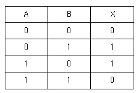
- AND
- OR
- EXCLUSIVE OR
- EXCLUSIVE NOR
(정답률: 63%)
29. 정상특성과 응답의 속응성을 동시에 개선시키려면 어느 제어를 하는 것이 가장 좋은가?
- 비례제어
- 미분제어
- 비례적분제어
- 비례적분미분제어
(정답률: 63%)
30. 유도전동기에서 단상 전동기에 보조권선을 설치하여 단상 전원에 주권선과 보조권선에 위상이 다른 전류를 흘려서 불평형 2상 전동기로 기동하는 방법은 다음 중 어느 것인가?
- 분상 기동형
- 반발 기동형
- 반발 유도형
- 셰이딩 코일형
(정답률: 46%)
31. 그림과 같은 교류 브리지 회로가 평형 상태에 있으려면 L의 값은?
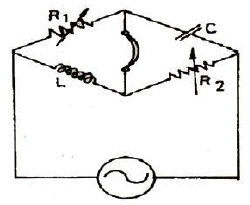
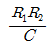
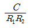
- R1R2C
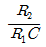
(정답률: 59%)
32. 제어신호가 펑스나 디지털 코드를 사용하는 제어는?
- 연속 제어
- 불연속 제어
- 개폐형 제어
- 정치 제어
(정답률: 57%)
33. 저항 R인 검류계 G에 그림과 같이 r1인 저항을 병렬로 r2인 저항을 직렬로 접속하고 A, B단자 사이의 저항을 R과 같게 하고 또한 G에 흐르는 전류를 전전류의 1/n로하기 위한 r1의 값은 얼마인가?
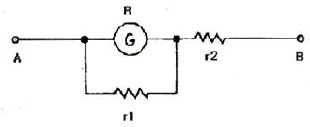
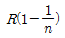
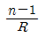
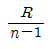
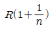
(정답률: 59%)
34. 두 개의 저항 R1, R2를 직렬로 연결하면 10Ω, 병렬로 연결하면 2.4Ω이 된다. 두 저항 값은 각각 몇 Ω 인가?
- 2.8
- 3.7
- 4.6
- 5.5
(정답률: 75%)
35. 역률(Power Factor)이란?
- 저항과 인덕턴스의 위상차
- 저항과 커패시턴스의 비
- 임피던스와 저항의 비
- 임피던스와 리액턴스의 비
(정답률: 76%)
36. 다음 중 설명이 잘못된 것은?
- 전기를 흐르게 하는 능력을 기전력이라 한다.
- 저항의 역수를 콘덕턴스라 하고 단위는 Ω으로 표시한다.
- 기전력의 단위는 V 이다.
- 전자의 이동방향과 전류의 방향은 반대이다.
(정답률: 68%)
37. 그림과 같은 다이오드 게이트회로에서 출력전압은 약 몇 [V] 인가? (단, 다이오드내의 전압강하는 무시한다.)
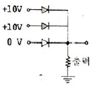
- 0
- 5
- 10
- 20
(정답률: 75%)
38. 다음 중 원자 하나에 최외각 전자가 4개인 4가의 전자(four valence electrons)로서 가전자대의 4개의 전자가 안정화를 위해 원자끼리 결합한 구조로 일반저긴 반도체 재료로 쓰고 있는 것은?
- Si
- P
- As
- Ga
(정답률: 83%)
39. 단면적 100[cm2], 비투자율 1000인 철심에 500회의 코일을 감고, 여기에 1[A]의 전류를 흘릴 때 자계가 1.28[AT/m]였다면 자기 인덕턴스는 약 몇 [mH] 인가?
- 0.1
- 0.81
- 8.04
- 16.08
(정답률: 44%)
40. 교류발전기의 병렬 운전조건에 해당되지 않는 것은?
- 기전력의 크기(전압)가 일치하는 것
- 기전력의 주파수가 일치하는 것
- 기전력의 위상이 일치하는 것
- 발전기의 용량이 일치하는 것
(정답률: 75%)
3과목: 소방관계법규
41. 다음 중 소방용 기계ㆍ기구 가운데 품질이 우수하다고 인정되는 소방용 기계ㆍ기구에 대하여 우수품질인증을 할 수 있는 자는?(관련 규정 개정전 문제로 기존 정답은 3번이며 여기서는 3번을 누르면 정답 처리 됩니다. 자세한 내용은 해설을 참고하세요.)
- 지시경제부장관
- 시ㆍ도지사
- 소방방재청장
- 소방본부장 또는 소방서장
(정답률: 78%)
42. 소방용수시설에서 저수조의 설치 기중으로 적합하지 않은 것은?
- 지면으로부터의 낙차 6m 이하일 것
- 흡수부분의 수심이 0.5m 이상일 것
- 소방펌프자동차가 쉽게 접근할 수 있도록 할 것
- 흡수에 지장이 없도록 토사 및 쓰레기 등을 제거할 수 있는 설비를 갖출 것
(정답률: 79%)
43. 방화관리자를 두어야 할 특정소방대상물로서 1급 방화관리대상물의 기준으로 옳은 것은?
- 가스제조설비를 갖추고 도시가스사업허가를 받아야 하는 시설
- 가연성가스를 1천톤 이상 저장ㆍ취급하는 시설
- 지하구
- 문화재보호법에 따라 국보 또는 보물로 지정된 목조건축물
(정답률: 61%)
44. 다음 중 소방본부장 또는 소방서장의 임무가 아닌 것은?
- 소방업무의 응원
- 화재의 예방조치
- 특정소방대상물에 소방시설의 설치 및 유지관리
- 화재의 원인 및 피해조사
(정답률: 57%)
45. 소방시설관리업의 등록기준 중 분말소화설비의 장비기준이 아닌 것은?
- 기동관 누설시험기
- 절연저항계
- 캡 스퍼너
- 전류전압측정계
(정답률: 55%)
46. 위험물의 임시저장 취급기준을 정하고 있는 것은?
- 대통령령
- 국무총리령
- 행정안전부령
- 시ㆍ도 조례
(정답률: 54%)
47. 소방본부장 또는 소방서장이 소방대상물의 소방검사를 하고자 할 때 몇 시간 전에 관계인에게 알려야 하는가?
- 12시간 전
- 24시간 전
- 36시간 전
- 48시간 전
(정답률: 65%)
48. 소방신호의 종류별 신호의 방법으로 5초 간격을 두고 5초씩 3회 싸이렌을 울리는 신호는?
- 경계신호
- 발화신호
- 해제신호
- 훈련신호
(정답률: 53%)
49. 형식승인을 얻지 아니한 소방용기계ㆍ기구를 판매할 목적으로 진열했을 때의 벌칙으로 맞는 것은?(관련 규정 개정전 문제로 기존 정답은 1번이었으며 여기서는 1번을 누르면 정답 처리 됩니다. 자세한 내용은 해설을 참고하세요.)
- 3년 이하의 징역 또는 1500만원 이하의 벌금
- 2년 이하의 징역 또는 1500만원 이하의 벌금
- 1년 이하의 징역 또는 1000만원 이하의 벌금
- 1년 이하의 징역 또는 500만원 이하의 벌금
(정답률: 75%)
50. 방염업자가 소방관계법령을 위반하여 방염업의 등록증을 다른 자에세 빌려 주었을 때 부과할 수 있는 과징금의 최고 금액으로 맞는 것은?
- 1천만원
- 2천만원
- 3천만원
- 5천만원
(정답률: 58%)
51. 소방훈련을 실시하지 않아도 되는 특정소방대상물은?
- 아파트, 위험물제조소등, 지하구, 철강 등 불연성물품을 저장ㆍ취급하는 창고 및 동ㆍ식물원을 제외한 연면적 15000m2 이상인 특정소방대상물
- 아파트, 지하구, 철강 등 불연성물품을 저장ㆍ취급하는 창고 및 동ㆍ식물원을 제외한 11층 이상의 특정소방대상물
- 가연성가스를 1천톤 이상 저장ㆍ취급하는 시설
- 상시근무 또는 거주하는 인원이 10인 이하인 특정소방대상물
(정답률: 74%)
52. 소방시설업자의 지위를 승계한 자는 행정안전부령이 정하는 바에 따라 누구에게 신고하여야 하는가?
- 소방본부장
- 소방서장
- 시ㆍ도지사
- 군수
(정답률: 77%)
53. 특정소방대상물의 관계인과 방화관리자의 직접적인 업무 내용이 아닌 것은?
- 자위소방대 조직
- 화기취급의 감독
- 방화시설의 유지 및 관리
- 소방시설의 공사 및 감독
(정답률: 57%)
54. 다음 화학물질 중 제6류 위험물에 속하지 않는 것은?
- 황산
- 질산
- 과염소산
- 과산화수소
(정답률: 57%)
55. 소방본부장 또는 소방서장의 건축허가 동의를 받아야 하는 범위로서 거리가 가장 먼 것은?
- 노유자시설인 경우 연면적이 200제곱미터 이상인 건축물
- 무창층이 있는 건축물로서 바닥면적이 150제곱미터 이상인 층이 있는 것
- 특정소방대상물 중 위험물제조소등, 가스시설 및 지하구
- 차고ㆍ주차장으로 사용되는 층 중 바닥면적이 100제곱미터 이상인 층이 있는 시설
(정답률: 74%)
56. 일반공사 감리 대상의 경우 감리현장 연면적의 총 합계가 10만m2 이하일 때 1인의 책임감리원이 담당하는 소방공사 감리현장은 몇 개 이하인가?
- 2개
- 3개
- 4개
- 5개
(정답률: 49%)
57. 다음 중 소방기술심의위원회 위원의 자격에 해당하지 않는 사람은?
- 소방기술사
- 소방관련 법인에서 소방관련 업무를 3년 이상 종사한 사람
- 소방과 관련된 교육기관에서 5년 이상 교육 또는 연구에 종사한 사람
- 석사 이상의 소방관련 학위를 소지한 사람
(정답률: 35%)
58. 다음 중 위험물탱크 안전성능시험자로 등록하기 위하여 갖추어야 할 사항에 포함되지 않는 것은?
- 자본금
- 기술능력
- 시설
- 장비
(정답률: 71%)
59. 소방기본법령에서 정하는 소방용수시설의 설치기준 사항으로 틀린 것은?
- 급수탑의 급수배관의 구경은 100밀리미터 이상으로 한다.
- 소화전은 상수도와 연결하여 지하식 또는 지상식의 구조로 한다.
- 급수탑의 개폐밸브는 지상에서 0.8미터 이상 1.5미터 이하의 위치에 설치하도록 한다.
- 상업지역 및 공업지역에 설치하는 경우는 소방대상물과의 수평거리를 100미터 이하가 되도록 한다.
(정답률: 56%)
60. 시ㆍ도 소방본부 및 소방서에서 운영하는 화재조사부서의 고유 업무관장 내용으로 적절하지 않은 것은?
- 화재조사의 실시
- 화재조사의 발전과 조사요원의 능력향상 사항
- 화재조사를 위한 장비의 관리운영 사항
- 화재피해 감소를 위한 예방 홍보
(정답률: 63%)
4과목: 소방전기시설의 구조 및 원리
61. 비상벨설비의 지구음향장치는 소방대상물의 각 부분으로 부터 다른 하나의 음향장치까지 수평거리가 몇 m 이하가 되도록 설치해야 하는가?
- 15m
- 25m
- 30m
- 50m
(정답률: 78%)
62. 1개의 감지기내에 서로 다른 종별 또는 감도 등의 기능을 갖춘 것으로서 일정시간 간격을 두고 각각 다른 2개 이상의 화재신호를 발하는 특성을 갖는 감지기는?
- 복합식 감지기
- 다신호식 감지기
- 아날로그식 감지기
- 디지털식 감지기
(정답률: 61%)
63. 비상방송설비에서 1층에서 화재 발생시 우선적으로 경보를 발하는 곳은?
- 발화층, 직상층
- 발화층, 지하전층
- 발화층, 직상층, 기타 지상층
- 발화층, 직상층, 지하층
(정답률: 64%)
64. 통로유도표지는 바닥으로부터 높이 몇 [m] 위치에 설치하여야 하는가?
- 0.5m 이하
- 1.0m 이하
- 1.5m 이하
- 2.0m 이하
(정답률: 67%)
65. 자동화재속보설비 속보기의 전압 변동시 정상적인 기능을 발휘하여야 하는 사용전압 범위는?
- 정격전압의 80% 및 120%
- 정격전압의 85% 및 115%
- 정격전압의 90% 및 110%
- 정격전압의 95% 및 1⑤%
(정답률: 83%)
66. 비상콘센트의 절연저항은 전원부와 외함사이를 몇 [V]용 절연저항계로 측정할 때 20MΩ 이상이어야 하는가?
- 100
- 250
- 300
- 500
(정답률: 74%)
67. 다음 중 정온식 스포트형 감지기의 구조 및 작동원리에 대한 설명이 아닌 것은?
- 바이메탈의 활곡 및 반전 이용
- 금속의 온도차 이용
- 액체의 팽창 이용
- 가용절연물 이용
(정답률: 53%)
68. 다음 중 누전경보기의 전원에 대한 설명으로 옳은 것은?
- 전원은 분전반으로부터 전용회로로 하고, 각 극에 개폐기 및 10A 이하의 과전류차단기를 설치 할 것
- 전원은 분전반으로부터 전용회로로 하고, 각 극에 개폐기 및 10A 이하의 배선용 차단기를 설치 할 것
- 전원은 분전반으로부터 전용회로로 하고, 각 극에 개폐기 및 15A 이하의 과전류차단기를 설치 할 것
- 전원은 분전반으로부터 전용회로로 하고, 각 극에 개폐기 및 15A 이하의 배선용 차단기를 설치 할 것
(정답률: 75%)
69. 다음 중 피난구유도등의 설치 장소로 적당하지 아니한 것은?
- 인접한 거실로 통하는 출입구
- 직통계단의 계단실 출입구
- 직통계단 부속실의 출입구
- 옥내로부터 직접 지상으로 통하는 출입구
(정답률: 58%)
70. 비상조명등에 관한 설명이다. 옳은 것은?
- 조도는 1룩스이고 예비전원의 축전지용량은 10분이상 비상조명을 작동시킬 수 있어야 한다.
- 예비전원을 내장하는 비상조명등에는 축전지와 예비전원충전장치를 내장한다.
- 비상조명에는 점검스위치를 설치해서는 안 된다.
- 예비전원을 내장하지 않는 비상조명기구는 사용할 수 없다.
(정답률: 57%)
71. 제1종 또는 제2종 접지공사에 사용하는 접지선을 사람이 접촉할 우려가 있을 경우 다음과 같이 시서하는데 그 내용이 맞지 않는 것은?
- 접지극은 지하 75[cm] 이상의 깊이에 매설할 것
- 지중에서 그 금속체로부터 1[m] 이상 이격할 것
- 접지선은 절연전선 도는 케이블을 사용할 것
- 접지선의 지하 75[cm]로부터 지표상 1.5[m]까지의 부분은 합성수지관 등으로 덮을 것
(정답률: 48%)
72. 다음 중 피난기구의 위치를 표시하는 표지에 대한 설명으로 옳지 않은 것은?
- 피난기구를 설치한 가까운 곳에 부착하였다.
- 발광식 표지를 부착하였다.
- 축광식 표지를 부착하였다.
- 방사성물질을 사용하는 위치표지는 사용할 수 없다.
(정답률: 65%)
73. 공기관식 차동식 분포형 감지기의 검출기 접점 수고시험은 무엇을 시험하는 것인가?
- 접점간격
- 다이아프램 용량
- 리크밸브의 이상유무
- 다이아프램의 이상유무
(정답률: 55%)
74. 비상콘센트설비에 있어 하나의 전용회로에 설치하는 비상콘센트는 몇 개 이하로 하여야 하는가?
- 5개
- 10개
- 50개
- 100개
(정답률: 79%)
75. 5~10회로까지 사용할 수 있는 누전경보기의 집합형 수신기 내부결선도에서 그 구성요소가 아닌 것은?
- 제어부
- 증폭부
- 도통시험 및 동작시험부
- 조작부
(정답률: 27%)
76. 다음은 누전경보기의 수신부의 설치제외에 대한 설명이다. 틀린 것은?
- 가연성의 증기ㆍ먼지ㆍ가스 등이나 부식성의 증기ㆍ가스 등이 다량으로 체류하는 장소
- 화약류를 제조하거나 저장 또는 취급하는 장소
- 습도가 낮은 장소
- 대전류회로ㆍ고주파 발생회로 등에 따른 영향을 받을 우려가 있는 장소
(정답률: 76%)
77. 무선통신보조설비의 증폭기에 대한 설치 기준이 틀린 것은?
- 비상전원 용량은 30분 이상 작동시킬 수 있는 것으로 할 것
- 전원은 전기가 정상적으로 공급되는 축전지 또는 교류 전압 옥내간선으로 할 것
- 전원까지의 배선은 전용으로 할 것
- 표시등 및 전류계를 설치할 것
(정답률: 64%)
78. 보행거리 25m 이내 마다 휴대용비상조명등을 3개 이상 설치해야 하는 곳은?
- 백화점
- 지하상가 및 지하역사
- 영화상영관
- 숙박시설
(정답률: 83%)
79. 비상방송설비의 확성기 음성입력은 실내인 경우 몇 W 이상이어야 하는가?
- 0.3W
- 0.5W
- 1W
- 0.1W
(정답률: 86%)
80. 자동화재속보설비는 자동화재탐지설비로부터 작동신호를 수신하여 관할소방서에 몇 회 이상 화재신호를 자동으로 통보하는가?
- 1회 이상
- 2회 이상
- 3회 이상
- 5회 이상
(정답률: 79%)